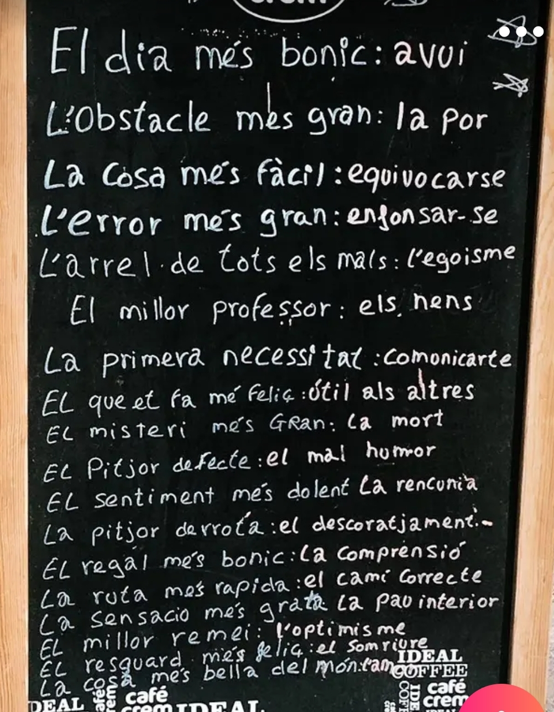

- El dia més bonic: avui
- L'obstacle més gran: la por
- La cosa més fàcil: equivocar-se
- L'error més gran: enfonsar-se
- L'arrel de tots els mals: l'egoisme
- El millor professor: els nens
- La primera necessitat: comunicar-te
- El que et fa més feliç: útil als altres
- El misteri més gran: la mort
- El pitjor defecte: el mal humor
- El sentiment més dolent: la rancúnia
- La pitjor derrota: el descoratjament
- El regal més bonic: la comprensió
- La ruta més ràpida: el camí correcte
- La sensació més grata: la pau interior
- El millor remei: l'optimisme
- El resguard més feliç: el somriure
- La cosa més bella del món: l'amor
